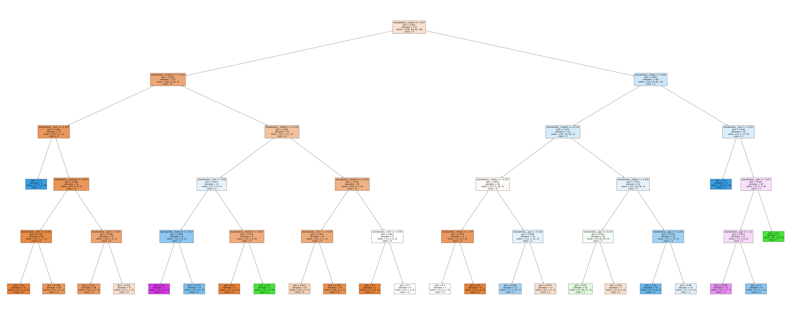

import pandas as pd
import numpy as np
from sklearn.pipeline import Pipeline
from sklearn.compose import make_column_selector, ColumnTransformer
from sklearn.preprocessing import StandardScaler, OneHotEncoder, PolynomialFeatures
from sklearn.linear_model import LinearRegression, Ridge, Lasso, ElasticNet
from sklearn.model_selection import train_test_split, cross_val_score
from sklearn.metrics import r2_score
from sklearn.model_selection import GridSearchCV
from sklearn.neighbors import KNeighborsClassifier
from sklearn.metrics import confusion_matrix
from sklearn.metrics import precision_score
from sklearn.metrics import accuracy_score
from sklearn.metrics import recall_score
from sklearn.metrics import classification_report
from sklearn.metrics import roc_auc_score
from sklearn.model_selection import train_test_split
from sklearn.metrics import roc_curve, auc
from sklearn.preprocessing import label_binarize
from sklearn.linear_model import LogisticRegression
from sklearn.tree import DecisionTreeClassifier
from sklearn.preprocessing import label_binarize
from sklearn.discriminant_analysis import LinearDiscriminantAnalysis
from sklearn.metrics import f1_scoreQ1: Natural Multiclass Models
Our dataset consists of clinical data from patients who entered the hospital complaining of chest pain (“angina”) during exercise. The information collected includes:
age: Age of the patientsex: Sex of the patientcp: Chest Pain type- Value 0: asymptomatic
- Value 1: typical angina
- Value 2: atypical angina
- Value 3: non-anginal pain
trtbps: resting blood pressure (in mm Hg)chol: cholesterol in mg/dl fetched via BMI sensorrestecg: resting electrocardiographic results- Value 0: normal
- Value 1: having ST-T wave abnormality (T wave inversions and/or ST elevation or depression of > 0.05 mV)
- Value 2: showing probable or definite left ventricular hypertrophy by Estes’ criteria
thalach: maximum heart rate achieved during exerciseoutput: the doctor’s diagnosis of whether the patient is at risk for a heart attack- 0 = not at risk of heart attack
- 1 = at risk of heart attack
ha = pd.read_csv("https://www.dropbox.com/s/aohbr6yb9ifmc8w/heart_attack.csv?dl=1")Fit a multiclass KNN, Decision Tree, and LDA for the heart disease data; this time predicting the type of chest pain (categories 0 - 3) that a patient experiences. For the decision tree, plot the fitted tree, and interpret the first couple splits.
X = ha.drop(["cp"], axis = 1)
y = ha["cp"]ha = ha.dropna()X_train, X_test, y_train, y_test = train_test_split(X, y, test_size=0.25, random_state=42)ct = ColumnTransformer(
[
('dummify', OneHotEncoder(sparse_output = False, handle_unknown = 'ignore'),
make_column_selector(dtype_include = object)),
('standardize', StandardScaler(), make_column_selector(dtype_include = np.number))
], remainder = 'passthrough'
).set_output(transform='pandas')knn_pipe1 = Pipeline([
('preprocessing', ct),
('knn', KNeighborsClassifier())
])
degrees = {'knn__n_neighbors': [5, 10, 15, 20, 25, 30, 35, 40, 45, 50]}
gscv = GridSearchCV(knn_pipe1, degrees, cv=5, scoring='accuracy')
gscv_fitted = gscv.fit(X, y)
result_df = pd.DataFrame(data={'knn__n_neighbors': [5, 10, 15, 20, 25, 30, 35, 40, 45, 50], "scores": gscv_fitted.cv_results_['mean_test_score']})
max_index = result_df['knn__n_neighbors'].idxmax()
row_with_max_value = result_df.loc[max_index]
print(row_with_max_value)knn__n_neighbors 50.000000
scores 0.520404
Name: 9, dtype: float64Decision tree
#Decision Tree
Decision_Tree_pipe1 = Pipeline([
('preprocessing', ct),
('decision_tree', DecisionTreeClassifier())
])
degrees = {'decision_tree__max_depth': [5, 10, 15, 20, 25, 30, 35, 40, 45, 50]}
gscv = GridSearchCV(Decision_Tree_pipe1, degrees, cv=5, scoring='accuracy')
gscv_fitted = gscv.fit(X, y)
result_df = pd.DataFrame(data={'decision_tree__max_depth': [5, 10, 15, 20, 25, 30, 35, 40, 45, 50], "scores": gscv_fitted.cv_results_['mean_test_score']})
max_index = result_df['scores'].idxmax()
row_with_max_value = result_df.loc[max_index]
print(row_with_max_value)decision_tree__max_depth 5.000000
scores 0.424848
Name: 0, dtype: float64Decision_Tree_pipe = Pipeline([
('preprocessing', ct),
('decision_tree', DecisionTreeClassifier(max_depth=5))
])
best_model = Decision_Tree_pipe.fit(X,y)import matplotlib.pyplot as plt
from sklearn.tree import plot_treeplt.figure(figsize=(100,40))
plot_tree(best_model.named_steps['decision_tree'], feature_names=ct.fit_transform(X).columns.tolist(), class_names=['0','1','2','3'],filled = True)
plt.show()
ct.fit_transform(X)array([[ 0.94595416, 0.69548232, 0.73019948, ..., -1.02157259,
0.02384305, 0.93266447],
[-1.89671419, 0.69548232, -0.11879736, ..., 0.87563364,
1.61880112, 0.93266447],
[ 0.18062038, 0.69548232, -0.68479525, ..., 0.87563364,
1.23083834, 0.93266447],
...,
[-1.022047 , 0.69548232, -1.25079315, ..., 0.87563364,
-0.75208249, -1.07219695],
[ 1.49262115, 0.69548232, 0.67359969, ..., 0.87563364,
-0.36411972, -1.07219695],
[ 0.28995377, -1.43785108, -0.11879736, ..., -1.02157259,
1.05841044, -1.07219695]])LDA
#lda
linear_pipe1 = Pipeline([
('preprocessing', ct),
('lda', LinearDiscriminantAnalysis())
])
degrees = {'decision_tree__max_depth': [5, 10, 15, 20, 25, 30, 35, 40, 45, 50]}
gscv = GridSearchCV(Decision_Tree_pipe1, degrees, cv=5, scoring='accuracy')
gscv_fitted = gscv.fit(X, y)
result_df = pd.DataFrame(data={'decision_tree__max_depth': [5, 10, 15, 20, 25, 30, 35, 40, 45, 50], "scores": gscv_fitted.cv_results_['mean_test_score']})
max_index = result_df['scores'].idxmax()
row_with_max_value = result_df.loc[max_index]
print(row_with_max_value)Q2: OvR
Create a new column in the ha dataset called cp_is_3, which is equal to 1 if the cp variable is equal to 3 and 0 otherwise.
Then, fit a Logistic Regression to predict this new target, and report the F1 Score.
Repeat for the other three cp categories. Which category was the OvR approach best at distinguishing?
ha['cp_is_3'] = (ha['cp'] == 3).astype(int)
ha['cp_is_2'] = (ha['cp'] == 2).astype(int)
ha['cp_is_1'] = (ha['cp'] == 1).astype(int)
ha['cp_is_0'] = (ha['cp'] == 0).astype(int)ha| age | sex | cp | trtbps | chol | restecg | thalach | output | cp_is_3 | cp_is_2 | cp_is_1 | cp_is_0 | |
|---|---|---|---|---|---|---|---|---|---|---|---|---|
| 0 | 63 | 1 | 3 | 145 | 233 | 0 | 150 | 1 | 1 | 0 | 0 | 0 |
| 1 | 37 | 1 | 2 | 130 | 250 | 1 | 187 | 1 | 0 | 1 | 0 | 0 |
| 2 | 56 | 1 | 1 | 120 | 236 | 1 | 178 | 1 | 0 | 0 | 1 | 0 |
| 3 | 57 | 0 | 0 | 120 | 354 | 1 | 163 | 1 | 0 | 0 | 0 | 1 |
| 4 | 57 | 1 | 0 | 140 | 192 | 1 | 148 | 1 | 0 | 0 | 0 | 1 |
| ... | ... | ... | ... | ... | ... | ... | ... | ... | ... | ... | ... | ... |
| 268 | 59 | 1 | 0 | 164 | 176 | 0 | 90 | 0 | 0 | 0 | 0 | 1 |
| 269 | 57 | 0 | 0 | 140 | 241 | 1 | 123 | 0 | 0 | 0 | 0 | 1 |
| 270 | 45 | 1 | 3 | 110 | 264 | 1 | 132 | 0 | 1 | 0 | 0 | 0 |
| 271 | 68 | 1 | 0 | 144 | 193 | 1 | 141 | 0 | 0 | 0 | 0 | 1 |
| 272 | 57 | 0 | 1 | 130 | 236 | 0 | 174 | 0 | 0 | 0 | 1 | 0 |
273 rows × 12 columns
#logistic
logistic_regression_pipeline_1 = Pipeline(
[('preprocessing', ct),
("logistic", LogisticRegression())]
)
logistic_regression_pipeline_1.fit(X, ha['cp_is_3'])Pipeline(steps=[('preprocessing',
ColumnTransformer(remainder='passthrough',
transformers=[('dummify',
OneHotEncoder(handle_unknown='ignore',
sparse_output=False),
<sklearn.compose._column_transformer.make_column_selector object at 0x7e3a049653c0>),
('standardize',
StandardScaler(),
<sklearn.compose._column_transformer.make_column_selector object at 0x7e3a04964130>)])),
('logistic', LogisticRegression())])In a Jupyter environment, please rerun this cell to show the HTML representation or trust the notebook. On GitHub, the HTML representation is unable to render, please try loading this page with nbviewer.org.
Pipeline(steps=[('preprocessing',
ColumnTransformer(remainder='passthrough',
transformers=[('dummify',
OneHotEncoder(handle_unknown='ignore',
sparse_output=False),
<sklearn.compose._column_transformer.make_column_selector object at 0x7e3a049653c0>),
('standardize',
StandardScaler(),
<sklearn.compose._column_transformer.make_column_selector object at 0x7e3a04964130>)])),
('logistic', LogisticRegression())])ColumnTransformer(remainder='passthrough',
transformers=[('dummify',
OneHotEncoder(handle_unknown='ignore',
sparse_output=False),
<sklearn.compose._column_transformer.make_column_selector object at 0x7e3a049653c0>),
('standardize', StandardScaler(),
<sklearn.compose._column_transformer.make_column_selector object at 0x7e3a04964130>)])<sklearn.compose._column_transformer.make_column_selector object at 0x7e3a049653c0>
OneHotEncoder(handle_unknown='ignore', sparse_output=False)
<sklearn.compose._column_transformer.make_column_selector object at 0x7e3a04964130>
StandardScaler()
[]
passthrough
LogisticRegression()
y_pred_3 = logistic_regression_pipeline_1.predict(X)
# Calculate F1 score
f1 = f1_score(ha['cp_is_3'], y_pred_3)
f10.0logistic_regression_pipeline_1.fit(X, ha['cp_is_2'])
y_pred_2 = logistic_regression_pipeline_1.predict(X)
# Calculate F1 score
f1 = f1_score(ha['cp_is_2'], y_pred_2)
f10.20408163265306123logistic_regression_pipeline_1.fit(X, ha['cp_is_1'])
y_pred_1 = logistic_regression_pipeline_1.predict(X)
# Calculate F1 score
f1 = f1_score(ha['cp_is_1'], y_pred_1)
f10.0logistic_regression_pipeline_1.fit(X, ha['cp_is_0'])
y_pred_0 = logistic_regression_pipeline_1.predict(X)
# Calculate F1 score
f1 = f1_score(ha['cp_is_0'], y_pred_0)
f10.7286821705426355Q3: OvO
Reduce your dataset to only the 0 and 1 types of chest pain.
Then, fit a Logistic Regression to predict between the two groups, and report the ROC-AUC.
Repeat comparing category 0 to 2 and 3. Which pair was the OvO approach best at distinguishing?
group 0 and 1
ha01 = ha[ha['cp'].isin([0, 1])]| age | sex | cp | trtbps | chol | restecg | thalach | output | cp_is_3 | cp_is_2 | cp_is_1 | cp_is_0 | |
|---|---|---|---|---|---|---|---|---|---|---|---|---|
| 2 | 56 | 1 | 1 | 120 | 236 | 1 | 178 | 1 | 0 | 0 | 1 | 0 |
| 3 | 57 | 0 | 0 | 120 | 354 | 1 | 163 | 1 | 0 | 0 | 0 | 1 |
| 4 | 57 | 1 | 0 | 140 | 192 | 1 | 148 | 1 | 0 | 0 | 0 | 1 |
| 5 | 56 | 0 | 1 | 140 | 294 | 0 | 153 | 1 | 0 | 0 | 1 | 0 |
| 6 | 44 | 1 | 1 | 120 | 263 | 1 | 173 | 1 | 0 | 0 | 1 | 0 |
| ... | ... | ... | ... | ... | ... | ... | ... | ... | ... | ... | ... | ... |
| 267 | 63 | 0 | 0 | 124 | 197 | 1 | 136 | 0 | 0 | 0 | 0 | 1 |
| 268 | 59 | 1 | 0 | 164 | 176 | 0 | 90 | 0 | 0 | 0 | 0 | 1 |
| 269 | 57 | 0 | 0 | 140 | 241 | 1 | 123 | 0 | 0 | 0 | 0 | 1 |
| 271 | 68 | 1 | 0 | 144 | 193 | 1 | 141 | 0 | 0 | 0 | 0 | 1 |
| 272 | 57 | 0 | 1 | 130 | 236 | 0 | 174 | 0 | 0 | 0 | 1 | 0 |
172 rows × 12 columns
ha01 = ha01.drop(['cp_is_3', 'cp_is_2', 'cp_is_1', 'cp_is_0'], axis=1)X_1=ha01.drop(['cp'],axis=1)
y_1 = ha01['cp']logistic_regression_pipeline_1 = Pipeline(
[('preprocessing', ct),
("logistic", LogisticRegression())]
)
logistic_regression_pipeline_1.fit(X_1,y_1)Pipeline(steps=[('preprocessing',
ColumnTransformer(remainder='passthrough',
transformers=[('dummify',
OneHotEncoder(handle_unknown='ignore',
sparse_output=False),
<sklearn.compose._column_transformer.make_column_selector object at 0x7e3a049653c0>),
('standardize',
StandardScaler(),
<sklearn.compose._column_transformer.make_column_selector object at 0x7e3a04964130>)])),
('logistic', LogisticRegression())])In a Jupyter environment, please rerun this cell to show the HTML representation or trust the notebook. On GitHub, the HTML representation is unable to render, please try loading this page with nbviewer.org.
Pipeline(steps=[('preprocessing',
ColumnTransformer(remainder='passthrough',
transformers=[('dummify',
OneHotEncoder(handle_unknown='ignore',
sparse_output=False),
<sklearn.compose._column_transformer.make_column_selector object at 0x7e3a049653c0>),
('standardize',
StandardScaler(),
<sklearn.compose._column_transformer.make_column_selector object at 0x7e3a04964130>)])),
('logistic', LogisticRegression())])ColumnTransformer(remainder='passthrough',
transformers=[('dummify',
OneHotEncoder(handle_unknown='ignore',
sparse_output=False),
<sklearn.compose._column_transformer.make_column_selector object at 0x7e3a049653c0>),
('standardize', StandardScaler(),
<sklearn.compose._column_transformer.make_column_selector object at 0x7e3a04964130>)])<sklearn.compose._column_transformer.make_column_selector object at 0x7e3a049653c0>
OneHotEncoder(handle_unknown='ignore', sparse_output=False)
<sklearn.compose._column_transformer.make_column_selector object at 0x7e3a04964130>
StandardScaler()
[]
passthrough
LogisticRegression()
roc_auc_1 = cross_val_score(logistic_regression_pipeline_1, X_1, y_1, cv=5, scoring='roc_auc')
np.mean(roc_auc_1)0.8376709401709401group 0 and 2
ha02 = ha[ha['cp'].isin([0, 2])]ha02 = ha02.drop(['cp_is_3', 'cp_is_2', 'cp_is_1', 'cp_is_0'], axis=1)
X_2=ha02.drop(['cp'],axis=1)
y_2 = ha02['cp']
logistic_regression_pipeline_2 = Pipeline(
[('preprocessing', ct),
("logistic", LogisticRegression())]
)
logistic_regression_pipeline_2.fit(X_2,y_2)
roc_auc_2 = cross_val_score(logistic_regression_pipeline_2, X_2, y_2, cv=5, scoring='roc_auc')
np.mean(roc_auc_2)0.7515837104072398group 0 and 3
ha03 = ha[ha['cp'].isin([0, 3])]
ha03 = ha03.drop(['cp_is_3', 'cp_is_2', 'cp_is_1', 'cp_is_0'], axis=1)
X_3 =ha03.drop(['cp'],axis=1)
y_3 = ha03['cp']
logistic_regression_pipeline_3 = Pipeline(
[('preprocessing', ct),
("logistic", LogisticRegression())]
)
logistic_regression_pipeline_3.fit(X_3,y_3)
roc_auc_3 = cross_val_score(logistic_regression_pipeline_3, X_3, y_3, cv=5, scoring='roc_auc')
np.mean(roc_auc_3)0.7412307692307692It seems like it’s best at distinguishing 0 and 1.